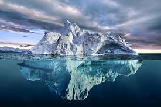
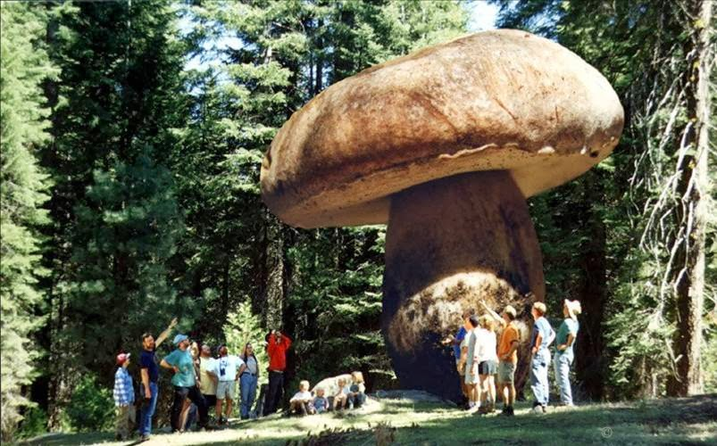

цікаві факти про природу
1
Якби людина мала таку ж силу, як мураха, вона могла б підіймати вагу від 2 до 5 тонн.
3
Найбільший айсберг помітили в 1956 році. Його довжина складала 320 метрів, а ширина – 96 кілометрів. Бельгія має меншу територію.
4
У США, штаті Орегон, є гігантський гриб. Він займає площу в 10 квадратних кілометрів. Вчені вважають, що його вік – 2400 років.
5
В Антарктиді є так звані Сухі долини, де через унікальні погодні умови дощ чи сніг не випадали вже понад 2 мільйони років.